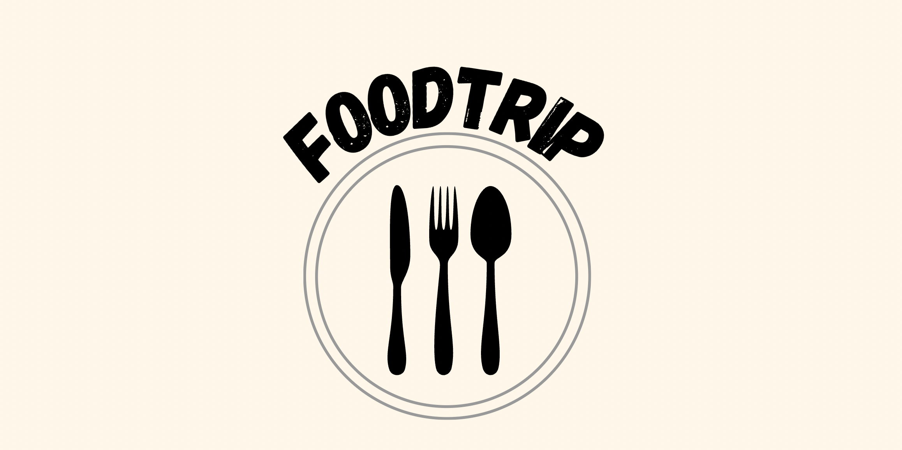
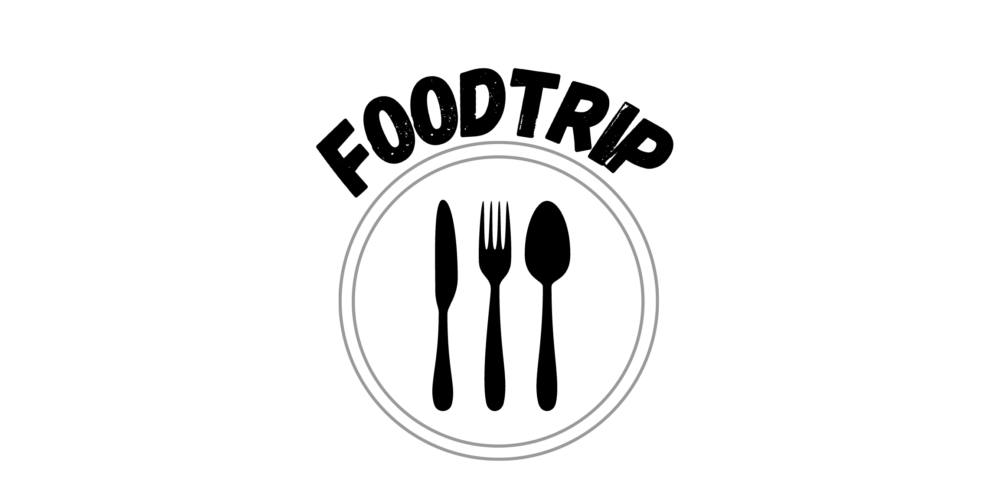
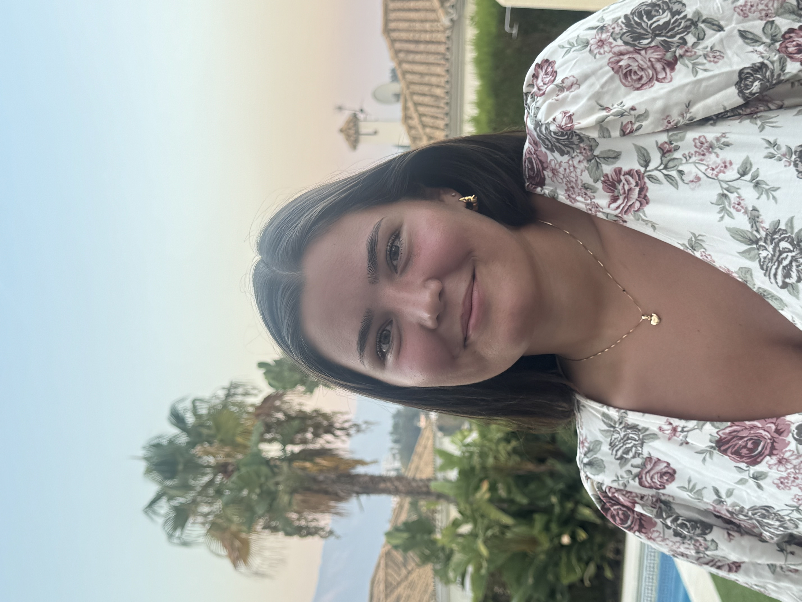
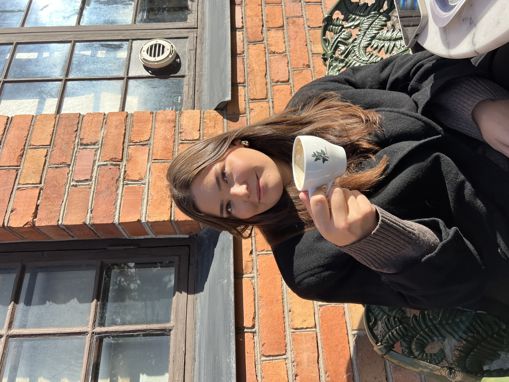
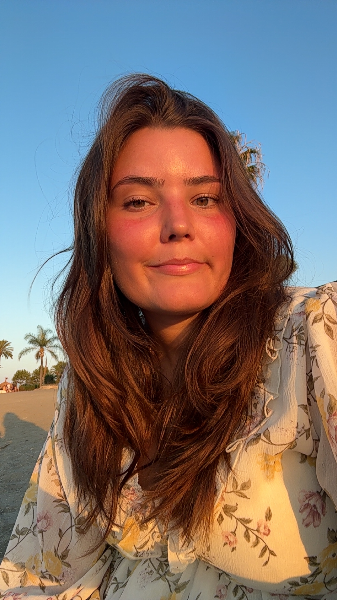

Food trip is an award-winning food and drink website visited by over 7 million hungry readers every month. Our audience comes to us for rigorously tested recipes, science-driven cooking techniques, robust equipment reviews, and stories that offer cultural and historical context to the foods we love to eat.
Foodtrip started as a school project by Anna Granberg, who wanted to share her love for cooking and global cuisine with others. From a small site to a full-fledged platform, our journey has always been guided by curiosity, creativity, and a hunger for flavors.
We believe cooking should be fun, accessible, and stress-free. Recipes on Foodtrip are easy to follow, using ingredients you can find locally. We emphasize traditional techniques but also encourage experimentation and personalization.
Food is culture, tradition, and love. We celebrate the stories behind each dish, learning about different countries, people, and histories through their cuisine. Sharing food is sharing a part of yourself, and that’s what Foodtrip is all about.

Founder & Recipe Curator

Web Developer & Designer

Content Writer & Food Blogger
We invite you to explore new flavors and try new recipes. Sign up for our newsletter to get weekly recipes, tips, and stories straight to your inbox.